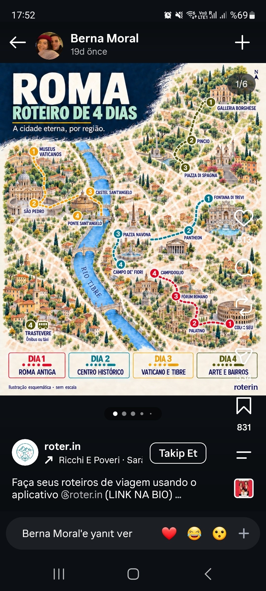
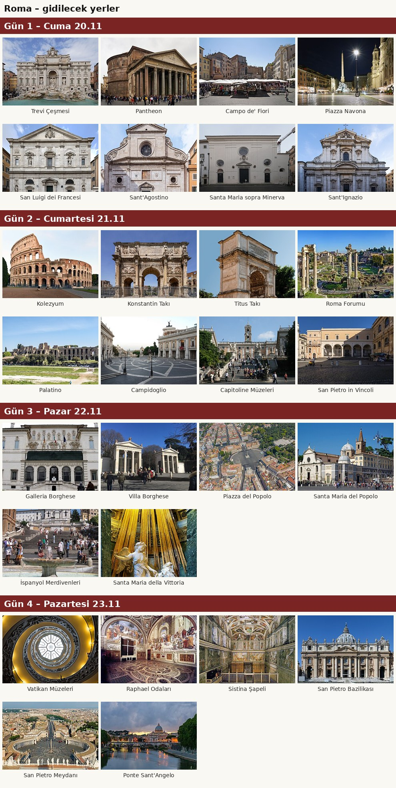
Görseller Wikipedia/Wikimedia Commons'tan alınmış küçük önizlemelerdir (lisans ve sahip bilgileri ilgili Wikipedia/Commons sayfalarında).
Kaynaklar:
roma_harita.jpg(roter.in, 4 günlük bölge haritası) ve italy.compass'in Day 1–4 görselleri. Fiyatlar görsellerden / yaklaşık değerlerdir, almadan önce resmî sitelerden kontrol edin.
| Gün | Tarih | Bölge | Bilet durumu |
|---|---|---|---|
| 1 | Cuma 20.11 | Merkez / meydanlar (haritada Dia 2) | Pantheon: bekleniyor |
| 2 | Cumartesi 21.11 | Antik Roma (haritada Dia 1) | Kolezyum: bekleniyor |
| 3 | Pazar 22.11 | Villa Borghese (haritada Dia 4'ün yeşil rotasının Borghese–Pincio–Spagna kısmı) | Galleria Borghese: karar verilecek, öneri: al |
| 4 | Pazartesi 23.11 | Vatikan (haritada Dia 3) | Vatikan Müzeleri: alındı ✅ |
Not: Haritadaki "Dia 4 – Arte e Bairros" gününün Trastevere ayağı programa girmedi (Borghese kısmını Pazar'a aldık). İstenirse bir akşam Trastevere'ye yemek için gidilebilir (aşağıda "Opsiyonel" bölümü).
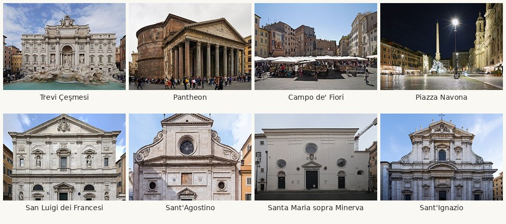
Haritadaki sıra: 1 Trevi → 2 Pantheon → 3 Piazza Navona → 4 Campo de' Fiori. Cuma günü olduğu için meydanlar hafta sonuna göre daha boş olur.
Önerilen akış (görsellerdeki ipuçlarına göre uyarlandı): 1. Fontana di Trevi: sabah 07:30–08:30 arası git, en sakin saat. (Çeşmeye yaklaşma alanı için son dönemde küçük bir giriş ücreti uygulaması getirildi, gitmeden kontrol et.) 2. Pantheon (09:00 açılışı civarı, bilet ~€5): bilet açılınca slot al. 3. Campo de' Fiori: görseldeki ipucu "günün erken saatlerinde daha iyi" (sabah pazarı öğleden sonra kapanır). 4. Öğle yemeği. 5. Piazza Navona: görseldeki ipucu "geç öğleden sonra / akşamüstü".
Yemek (görselden): Armando al Pantheon (klasik Roma mutfağı, rezervasyon şart), Two Sizes (tiramisu).
Sanat eserleri: - Trevi Çeşmesi: Nicola Salvi'nin barok çeşmesi, ortada Okeanos/Neptün heykeli (Pietro Bracci). - Pantheon: Rafael'in mezarı, İtalya kralı II. Vittorio Emanuele ve I. Umberto'nun mezarları, oculus (tavan açıklığı), Melozzo da Forlì'ye atfedilen "Müjde" tablosu. - Piazza Navona: Bernini'nin Dört Nehir Çeşmesi, Moor Çeşmesi (Bernini), Borromini'nin Sant'Agnese in Agone kilisesi. - Campo de' Fiori: Giordano Bruno heykeli (Ettore Ferrari).
Haritada olmayan ama yakın (öneri, hepsi ücretsiz): - San Luigi dei Francesi (Navona'ya 5 dk): Caravaggio'nun Contarelli Şapeli. "Aziz Matta'nın Çağrılışı", "Aziz Matta'nın Şehit Edilişi", "Aziz Matta ve Melek". - Sant'Agostino: Caravaggio'nun "Loreto Madonnası"; Raphael'in Isaiah freski. - Santa Maria sopra Minerva (Pantheon'un yanı): Michelangelo'nun "Diriliş Mesih'i", Bernini'nin fil heykelli obelisk, Filippino Lippi freskleri. - Sant'Ignazio: Andrea Pozzo'nun trompe-l'œil tavan freski.
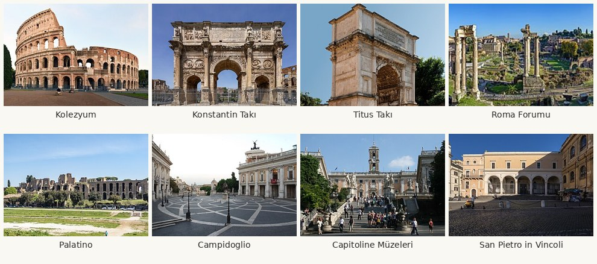
Haritadaki sıra: 1 Colosseo → 2 Palatino → 3 Foro Romano → 4 Campidoglio.
Önerilen akış: 1. Kolezyum (zaman slotlu giriş, sabah ilk slotu al). 2. Palatino Tepesi (kombine biletin içinde). 3. Roma Forumu (kombine biletin içinde). 4. Capitoline Tepesi / Campidoglio (ücretsiz meydan) ve istersen Piazza Venezia.
Bilet: Kolezyum + Forum + Palatino tek kombine bilet (görselde €18'den başlıyor, genelde 24 saat geçerli). Ayrı ayrı bilet almaya gerek yok. Sadece resmî siteden alın (ticketing.colosseo.it), yeniden satıcılar pahalı.
Yemek (görselden): Taverna dei Fori Imperiali (klasik Roma yemekleri), La Carbonara (Monti'de geleneksel makarna), Ai Tre Scalini (şarap barı, hafif atıştırmalık).
Sanat / yapılar: - Kolezyum: Flavian Amfitiyatrosu (MS 80), bilet turunda arena zemini ve hypogeum (yer altı) bölümü. - Konstantin Takı (Kolezyum'un yanı) ve Titus Takı: Titus Takı'ndaki Kudüs Tapınağı ganimeti (Menora) kabartması. - Roma Forumu: Septimius Severus Takı, Saturn Tapınağı sütunları, Curia, Vesta Tapınağı, Maxentius Bazilikası. - Palatino: Domus Augustana, Domus Livia'daki antik freskler, Farnese Bahçeleri. - Campidoglio: Michelangelo'nun tasarladığı meydan, ortada Marcus Aurelius heykelinin kopyası (orijinali müzede).
Haritada olmayan (görselden): - Piazza Venezia / Vittoriano (Altare della Patria): ücretsiz. Panoramik asansörle Roma manzarası ücretli.
Opsiyonel: Capitoline Müzeleri (~€15–16): Kapitol Dişi Kurdu, Ölen Galyalı, Marcus Aurelius'un orijinal atlı heykeli, Konstantin Kolossusu parçaları, Kapitol Venüsü, Spinario (dikenli çocuk), Bernini'nin Medusa'sı. Yorgunsan atla.
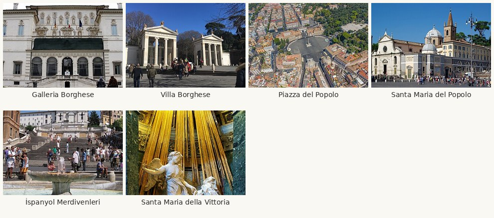
Haritadaki sıra: 1 Galleria Borghese → 2 Pincio → 3 Piazza di Spagna. Akış: Galleria Borghese (saatli giriş) → Villa Borghese parkı → Pincio Terası → Piazza del Popolo → İspanyol Merdivenleri. Pincio için akşamüstü gün batımı iyi.
Bilet: Galleria Borghese giriş ücreti ~€15 (görselde "from €15", rezervasyon ücreti dahil). Rezervasyon zorunlu, 2 saatlik slotlar var ve çok çabuk doluyor. Villa Borghese parkı ücretsiz.
Yemek (görselden): Casina Valadier (manzaralı, şık), Babette (Roma bistrosu), Canova Tadolini (sanat atmosferli kafe, Canova'nın eski atölyesi, heykeller arasında içiyorsun).
Galleria Borghese eserleri (müze küçük ama yoğun): - Bernini: Apollo ve Daphne, Proserpina'nın Kaçırılışı, David, Aeneas ve Anchises, Hakikat Açığa Çıkıyor. - Canova: Pauline Bonaparte, Venüs Victrix olarak. - Caravaggio: Meyve Sepetli Çocuk, Hasta Bakkhus, Madonna dei Palafrenieri, Aziz Jerome, Goliat'ın Kellesini Tutan David, Vaftizci Yahya. - Titian: Kutsal ve Dünyevi Aşk. - Raphael: Mesih'in Gömülüşü. - Correggio: Danae.
Haritada olmayan (görselden): - Piazza del Popolo: ücretsiz. Ramses II'ye ait Mısır obeliski, ikiz kiliseler. - Santa Maria del Popolo (ücretsiz, öneri): Caravaggio'nun Cerasi Şapeli ("Pavlus'un Hidayeti", "Petrus'un Çarmıha Gerilişi"), Raphael'in Chigi Şapeli. - Villa Borghese parkı: ayrı bir durak olarak haritada yok (ücretsiz). - İspanyol Merdivenleri üstünde Trinità dei Monti kilisesi; altta Bernini'ye atfedilen Barcaccia Çeşmesi.
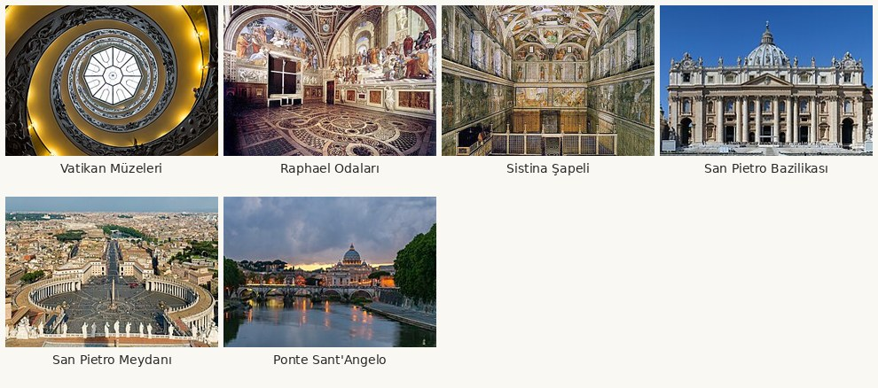
Haritadaki sıra: 1 Vatikan Müzeleri → 2 San Pietro → 3 Castel Sant'Angelo → 4 Ponte Sant'Angelo.
⚠️ Pazartesi günleri Castel Sant'Angelo genelde kapalıdır. Dolayısıyla bilet almaya değmez; dışarıdan ve Ponte Sant'Angelo'dan görmek yeterli (köprü ücretsiz ve açık). Resmî sitesinden günü doğrulayın.
Önerilen akış: 1. Vatikan Müzeleri (biletiniz var): önce müze, sonunda Sistina, oradan bazilikaya geçiş mümkün (grup turlarında geçerli, bireysel için kontrol edin). 2. San Pietro Bazilikası (ücretsiz, güvenlik kuyruğu olabilir). Kubbeye çıkış ayrı ücretli. 3. Via della Conciliazione boyunca yürüyerek Castel Sant'Angelo'yu dışarıdan gör, Ponte Sant'Angelo'dan geç.
Kıyafet: omuz ve dizler kapalı olmalı (bazilika için).
Yemek (görselden): Ristorante Arlù (Vatikan yakını klasik Roma).
Vatikan Müzeleri eserleri: - Sistina Şapeli: Michelangelo'nun tavan freskleri ve Son Yargı. - Raphael Odaları: Atina Okulu. - Pio-Clementino Müzesi: Laokoon grubu, Belvedere Apollon'u, Belvedere Torso'su. - Haritalar Galerisi, Gobelen Galerisi, Bramante'nin çift sarmallı merdiveni. - Pinacoteca: Caravaggio'nun "İndirilme"si, Raphael'in "Transfigürasyon"u, Leonardo'nun "Aziz Jerome"u.
San Pietro Bazilikası eserleri: - Michelangelo'nun Pietà'sı. - Bernini'nin Baldacchino'su (bronz) ve Cathedra Petri. - Arnolfo di Cambio'ya atfedilen Aziz Petrus heykeli. - Michelangelo'nun tasarladığı kubbe. - Dışarıda: Bernini'nin sütunlu meydanı.
Haritada olmayan: yok, görseldeki beş yerin hepsi haritada var. Castel Sant'Angelo içinde (kapalı olduğu için sadece bilgi): Papa dairesi, terastan manzara, Hadrianus Mozolesi'nin kalıntıları.
| Görsel | Haritada olmayan |
|---|---|
| Day 1 – Ancient Rome | Piazza Venezia (ücretsiz) |
| Day 2 – Vatican & Centro | Hepsi haritada var (haritada ayrıca Trevi var, görselde yok) |
| Day 3 – Villas & Gardens | Piazza del Popolo, Villa Borghese parkı |
| Day 4 – Trastevere & River | Santa Maria in Trastevere, Tiber Adası, Janiculum (Gianicolo) Tepesi (haritada Trastevere ve Campo de' Fiori var) |
Opsiyonel (Trastevere gününden, programa girmedi): - Santa Maria in Trastevere: 12. yüzyıl mozaikleri, Pietro Cavallini'nin apsis mozaikleri. Ücretsiz. - Tiber Adası: Ücretsiz yürüyüş. - Janiculum Tepesi: Garibaldi anıtı, gün batımı manzarası. - Yemek: Da Enzo al 29, Nannarella, Otaleg! (dondurma). - Akşam yemeği için Trastevere'ye bir akşam gidilebilir.
| Yer | Öneri | Neden |
|---|---|---|
| Vatikan Müzeleri | ✅ Alındı | |
| Kolezyum + Forum + Palatino | Al (açılır açılmaz) | En popüler slotlar hızla tükenir; sabah ilk slot en sakini. |
| Galleria Borghese | Al, hemen | Rezervasyon zorunlu, 2 saatlik slot, kontenjan çok sınırlı, hafta sonu daha da hızlı doluyor. Pazar günü olduğu için daha da önemli. Koleksiyon (Bernini, Caravaggio) Roma'nın en iyilerinden. |
| Pantheon | Al (€5), açılınca | Sıra olabiliyor, slotlu bilet kuyruktan kurtarır. |
| Castel Sant'Angelo | Alma | Pazartesi (Vatikan günü) kapalı. Dışarıdan ve köprüden görmek yeterli. |
| Capitoline Müzeleri | İsteğe bağlı | Cumartesi yorgun değilsen. |
| San Pietro kubbesi | İsteğe bağlı | Yerinde alınır, merdiven yorucu. |
| San Pietro Bazilikası, Navona, Trevi, Spanish Steps, Campidoglio, kiliseler | Gerekmez | Ücretsiz. |
Sıra: önce Galleria Borghese (slot tükenmesin), sonra Kolezyum ve Pantheon açılınca.
Nerede, hangi eser incelenecek (günlere göre). 🔸 = görsellerde yok, benim önerim.
| Yer | Eserler / ne bakılacak |
|---|---|
| Pantheon | Kubbe ve oculus (Roma betonunun en büyük kubbesi, MS 2. yy), Rafael'in mezarı, Melozzo da Forlì'ye atfedilen "Müjde" |
| Piazza Navona | Bernini'nin Dört Nehir Çeşmesi (obeliskin altında Nil, Ganj, Tuna, Rio de la Plata), Borromini'nin Sant'Agnese in Agone cephesi. Bernini ile Borromini'nin rekabeti burada yan yana görülür |
| 🔸 San Luigi dei Francesi | Caravaggio, Contarelli Şapeli (sol şapel): Matta'nın Çağrılışı, Matta'nın Şehit Edilişi, Matta ve Melek. Işık-gölge (tenebrizm) için en iyi yer |
| 🔸 Sant'Agostino | Caravaggio, Loreto Madonnası (ayakları çıplak, kirli hacılar) |
| 🔸 Santa Maria sopra Minerva | Michelangelo, Diriliş Mesih'i; Bernini'nin fil + obelisk'i (önünde meydanda) |
| 🔸 Sant'Ignazio | Andrea Pozzo, tavan trompe-l'œil freski; tavanın "açılan kubbesi" aslında düz. Merkez zeminde işaretli noktadan bakılır |
| Trevi Çeşmesi | Nicola Salvi'nin barok çeşmesi, Okeanos heykeli (Pietro Bracci) |
| Campo de' Fiori | Giordano Bruno heykeli |
| Yer | Eserler / ne bakılacak |
|---|---|
| Kolezyum | Roma mühendisliği, üç katlı kemer ve sütun düzeni (Dor, İyon, Korint), hypogeum |
| Konstantin Takı (Kolezyum'un yanı) | Zafer takı; üzerindeki kabartmalar önceki imparatorlardan devşirilmiş (spolia) |
| Titus Takı (Forum) | Kudüs Tapınağı ganimeti, Menora kabartması |
| Roma Forumu | Septimius Severus Takı, Saturn Tapınağı, Curia, Vesta Tapınağı, Maxentius Bazilikası |
| Palatino | Domus Livia'da duvar freskleri, Domus Augustana |
| Campidoglio | Michelangelo'nun tasarladığı meydan (zemin deseni ve cepheler) |
| 🔸 Capitoline Müzeleri (isteğe bağlı) | Kapitol Dişi Kurdu, Ölen Galyalı, Marcus Aurelius'un orijinal atlı heykeli, Konstantin Kolossusu parçaları (avluda), Bernini'nin Medusa'sı, Caravaggio "Falcı Kadın" ve "Vaftizci Yahya" |
| 🔸 San Pietro in Vincoli (Kolezyum'a yürüyüş mesafesi, ücretsiz) | Michelangelo, Musa (II. Julius'un mezarı) |
| Yer | Eserler / ne bakılacak |
|---|---|
| Galleria Borghese, zemin kat | Canova, Pauline Bonaparte (Venüs Victrix); Bernini: David, Apollo ve Daphne, Proserpina'nın Kaçırılışı, Aeneas ve Anchises, Hakikat Açığa Çıkıyor; Caravaggio odası: Meyve Sepetli Çocuk, Hasta Bakkhus, Madonna dei Palafrenieri, Aziz Jerome, Goliat'ın Kellesini Tutan David, Vaftizci Yahya |
| Galleria Borghese, üst kat (Pinacoteca) | Raphael, Mesih'in Gömülüşü; Titian, Kutsal ve Dünyevi Aşk; Correggio, Danae; Antonello da Messina |
| Piazza del Popolo | Ramses II obeliski, ikiz kiliseler |
| 🔸 Santa Maria del Popolo | Caravaggio, Cerasi Şapeli: Pavlus'un Hidayeti, Petrus'un Çarmıha Gerilişi; Raphael'in Chigi Şapeli |
| İspanyol Merdivenleri | Barcaccia Çeşmesi (Bernini, baba-oğul), Trinità dei Monti |
| 🔸 Santa Maria della Vittoria (isteğe bağlı, merkeze yakın) | Bernini, Aziz Teresa'nın Vecdi (Cornaro Şapeli) |
| Yer | Eserler / ne bakılacak |
|---|---|
| Pio-Clementino Müzesi | Laokoon grubu, Belvedere Apollon'u, Belvedere Torso'su |
| Haritalar ve Gobelen Galerileri | Tavan freskleri, Raphael atölyesi kartonlarından dokunmuş duvar halıları |
| Raphael Odaları | Stanza della Segnatura: Atina Okulu, Disputa. Ayrıca Heliodorus odası, Borgo Yangını |
| Sistina Şapeli | Michelangelo: tavan (Yaratılış, Adem'in Yaratılışı) ve altar duvarında Son Yargı. Yan duvarlar: Botticelli, Perugino, Ghirlandaio |
| Pinacoteca (ayrı kanat) | Raphael, Transfigürasyon; Caravaggio, İndirilme; Leonardo, Aziz Jerome (bitmemiş); Giotto, Stefaneschi Triptiği |
| San Pietro Bazilikası | Michelangelo, Pietà (girişte sağ şapel); Bernini, Baldacchino ve Cathedra Petri; Michelangelo kubbesi; Arnolfo di Cambio'ya atfedilen Aziz Petrus heykeli |
| Meydan | Bernini'nin sütunlu kolonadı |
| Ponte Sant'Angelo | Bernini atölyesinin melek heykelleri |
Her eserin resmi, Roma'da nerede olduğu ve E.H. Gombrich'in Sanatın Öyküsü'nde hangi bölümde ele alındığı. Bölüm numaraları kitabın İngilizce baskısındaki sıraya göre sanatçıya verilmiştir, yani o sanatçının kitapta anlatıldığı bölüm. Bu belirli eserin kitapta resimli ya da tek tek anılıp anılmadığını doğrulayamadım. Bunun için kitabın sonundaki "List of illustrations by location" (16. baskıda Rome başlığı altında) bölümüne bakın. Emin olmadıklarımı "tahminen" diye yazdım, Türkçe baskıda başlıklar farklı olabilir.
| Resim | Eser | Nerede | Sanatın Öyküsü |
|---|---|---|---|
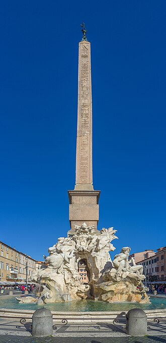 |
Dört Nehir Çeşmesi Bernini, 1648–51 |
Piazza Navona, Sant'Agnese in Agone'nin karşısı | 19 / 21 (Bernini) |
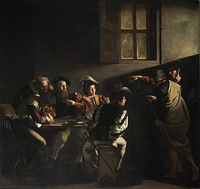 |
Aziz Matta'nın Çağrılışı Caravaggio, 1599–1600 |
San Luigi dei Francesi, Contarelli Şapeli (sol şapel) | 19 (Caravaggio) |
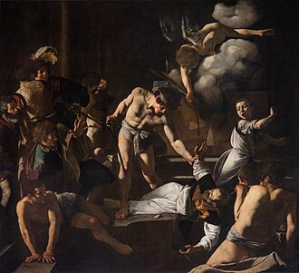 |
Aziz Matta'nın Şehit Edilişi Caravaggio, 1599–1600 |
San Luigi dei Francesi, Contarelli Şapeli | 19 (Caravaggio) |
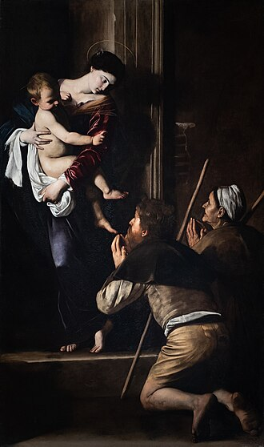 |
Loreto Madonnası Caravaggio, 1604–06 |
Sant'Agostino, Cavalletti Şapeli (ilk sol şapel) | 19 (Caravaggio) |
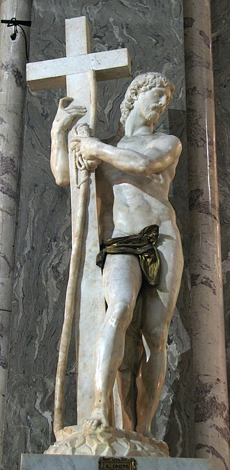 |
Diriliş Mesih'i Michelangelo, 1519–21 |
Santa Maria sopra Minerva | 15 (Michelangelo) |
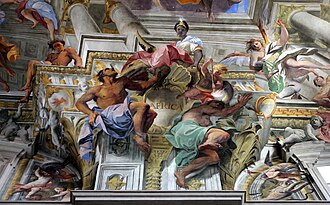 |
Tavan freski (trompe-l'œil) Andrea Pozzo, 1685–94 |
Sant'Ignazio, nef tavanı | 21 (Pozzo) |
Dört Nehir Çeşmesi: Papa X. Innocentius Pamphilj, ailesinin sarayı ve Sant'Agnese in Agone'nin çevrelediği Piazza Navona'yı papalık gücünün vitrini yapmak istedi. Bernini'nin 1646'dan sonra papalığın gözünden düşmüş olduğu, gümüş bir çeşme modelinin ona papaya gösterilmesiyle yeniden ön plana çıktığı anlatılır. Obeliskin altında Nil, Ganj, Tuna ve Rio de la Plata'yı simgeleyen dört dev figür vardır, yani Kilise'nin dört kıtaya yayılan otoritesi. Obeliskin tepesindeki güvercin Pamphilj ailesinin arması, Bernini'nin amacı ise tek bir mermer kayalıkta su, taş ve hareketi bir araya getirmekti.
Aziz Matta'nın Çağrılışı: Şapeli yaptıran Fransız kardinal Matteo Contarelli ölünce işin yıllardır yarım kalmış olması Papalık'ı sıkıştırıyordu. 1599'da bu iş genç ve henüz tanınmayan Caravaggio'ya verildi, bu onun ilk büyük kilise siparişiydi. Caravaggio kutsal bir sahneyi çağdaş kıyafetli, sıradan insanların bulunduğu bir meyhane odasına koydu. Ona göre Tanrı'nın çağrısı soyut bir olay değil, günlük hayatın ortasında gelen bir andı. Mesih'in eli ve pencereden süzülen ışık aynı çizgidedir.
Aziz Matta'nın Şehit Edilişi: Contarelli Şapeli'nin karşı duvarındaki bu tabloda Caravaggio, Çağrılış'ın tersini yapar: dinginlik yerine şiddet. Ele geçirilen Matta'nın yere serilişi, cellat, ve çevresinden kaçışan kalabalık tek bir patlama gibi kurgulanmıştır. Caravaggio'nun bu şapelde birkaç kez yeniden başlamak zorunda kaldığı, ilk Matta ve Melek tablosunun reddedildiği bilinir. Sol kenardaki bakan yüzün kendi otoportresi olduğu düşünülür.
Loreto Madonnası: Caravaggio'yu Ermete Cavalletti şapeli için tutan Roma ailesi, Loreto'daki Meryem'in evi hac geleneğine bağlıydı. Caravaggio hacıları çıplak, kirli ayaklı köylüler olarak gösterdi, Meryem ise sokağın kapısında duran gerçek bir kadın gibidir. Çağdaşlar bu sadeliği tuhaf ve saygısız buldu. Caravaggio'ya göre ise inanç, halkın kendisindeydi.
Diriliş Mesih'i: Metello Vari adlı Roma soylusu Michelangelo'ya 1514 civarı bir Mesih heykeli siparişi verdi. İlk mermer blokta kara bir damar çıkınca Michelangelo işi bıraktı ve ikinci bir blokla yeniden başladı. Ortaya çıkan Mesih çıplak ve idealize edilmiş bir bedenle haçı, Kilise'nin zaferini tutar gibi taşır. Bitirme işlerini yardımcısı yaptı, bronz örtü ise sonradan eklendi. Michelangelo için insan bedeni ilahi güzelliğin taşıyıcısıydı.
Sant'Ignazio tavan freski: Sant'Ignazio, Cizvitlerin kilisesidir. Tavandaki freski 1685–94'te yapan Andrea Pozzo bizzat bir Cizvit kardeşiydi, yani hem ressam hem de teorisyendi. Fresk Aziz Ignatius'un zaferini ve Cizvitlerin dünyanın dört köşesine ulaşan misyonunu anlatır. Kubbe için para bulunamayınca Pozzo kubbeyi tuvale boyadı, nefte işaretli noktadan bakınca mimarinin göğe açıldığı hissi vardır. Amaç, Karşı-Reform'un inananı şaşırtıp etkileme stratejisiydi.
| Resim | Eser | Nerede | Sanatın Öyküsü |
|---|---|---|---|
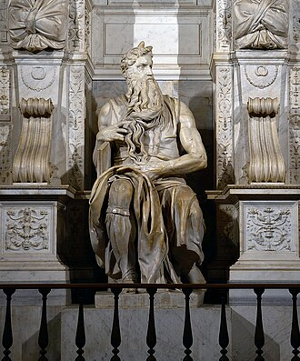 |
Musa Michelangelo, ~1513–15 (II. Julius'un mezarı) |
San Pietro in Vincoli | 15 (Michelangelo) |
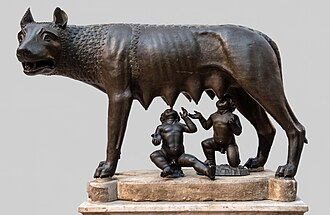 |
Kapitol Dişi Kurdu Etrüsk bronzu (ikizler sonradan eklendi) |
Capitoline Müzeleri, Palazzo dei Conservatori | bölümü emin değilim (Roma öncesi/Etrüsk, ch.4–5 civarı) |
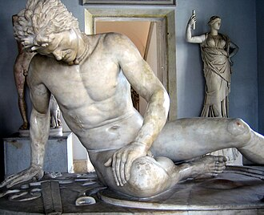 |
Ölen Galyalı Hellenistik bronzun Roma kopyası |
Capitoline Müzeleri, Palazzo Nuovo | 4 (Hellenistik heykel) |
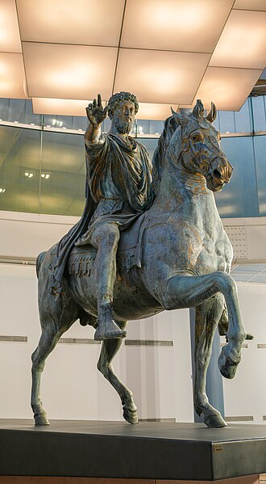 |
Marcus Aurelius atlı heykeli MS ~175 |
Capitoline Müzeleri (orijinal), meydanda kopyası | 5 (Roma sanatı) |
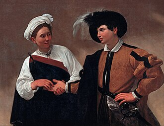 |
Falcı Kadın Caravaggio, ~1594 |
Capitoline Müzeleri, Pinacoteca | 19 (Caravaggio) |
Musa: II. Julius 1505'te Michelangelo'ya kendi mezar anıtı için kırk heykellik devasa bir proje verdi. Papa'nın fikrini değiştirmesi, ölümü ve mirasçılarla yıllarca süren anlaşmazlıklar yüzünden proje onlarca yıl sürdü ve Michelangelo'nun kendisi buna "mezar trajedisi" diyecek kadar yoruldu. Anıt nihayet 1545'te çok küçük bir hâlde tamamlandı. Musa 1513–15 civarında yapıldı. Başındaki boynuzlar, İbranice kelimenin Latince çeviride boynuz olarak okunmasından gelir. Öfkeyle kalkmak üzere olan Musa, Julius'un da kişiliğini yansıtır denir.
Kapitol Dişi Kurdu: Kurdun Etrüsk bronzu olduğu uzun süre kabul edildi. Son yıllarda yapılan çalışmalar bunun ortaçağ olabileceğini de tartışmaya açtı. Papa IV. Sixtus 1471'de bunu ve diğer antik bronzları Roma halkına armağan etti ve bu Capitoline Müzeleri'nin başlangıcı sayılır. Romulus ve Remus ikizleri sonradan eklendi. Papalık bu hediyeyle kendisini antik Roma'nın mirasçısı olarak sunuyordu.
Ölen Galyalı: Orijinal Hellenistik bronz, Pergamon kralı I. Attalos'un Galatlara (Galyalılara) karşı kazandığı zaferleri kutlayan anıt için yapıldı. Yenilen düşmanı küçümsemek yerine onurlu ve acı çeken biri olarak göstermek, zaferi daha da değerli kılıyordu. Roma kopyası 17. yüzyılda Roma'da bulundu ve 18. yüzyılda Capitoline Müzeleri'ne girdi. Boynundaki halka (torc) Galat kimliğinin işaretidir.
Marcus Aurelius atlı heykeli: Bu bronz heykel MS yaklaşık 175'te Marcus Aurelius'u, barışı sağlayan bir komutan olarak gösterir. Ortaçağda Hristiyan imparator Konstantin sanıldığı için eritilmekten kurtuldu, bu yüzden hayatta kalan nadir antik bronz atlı heykellerdendir. Papa III. Paulus 1538'de onu Campidoglio'ya taşıttı, Michelangelo da meydanı ve kaideyi tasarladı. Orijinal artık müzenin içinde korunur, meydandaki kopyadır.
Falcı Kadın: Caravaggio bu tabloyu Roma'da henüz tanınmadığı, yaklaşık 1594 yıllarında yaptı. Genç bir adamın avucunu okuyan kadın, aynı anda yüzüğünü çalar. Konu Caravaggio'nun sonraki dini eserlerinde de görülen gerçeklik anlayışının erken bir göstergesidir. Tür sahnesi (günlük hayat) olarak ressamın şöhretini hazırlayan eserlerden biriydi.
| Resim | Eser | Nerede | Sanatın Öyküsü |
|---|---|---|---|
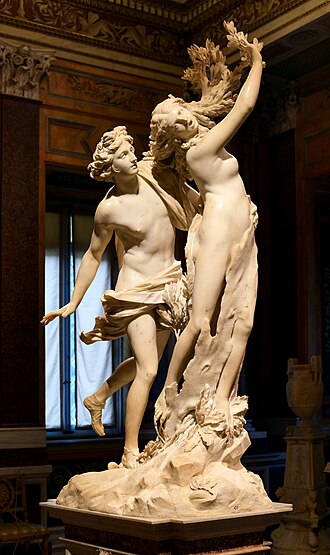 |
Apollo ve Daphne Bernini, 1622–25 |
Galleria Borghese, zemin kat | 19 / 21 (Bernini) |
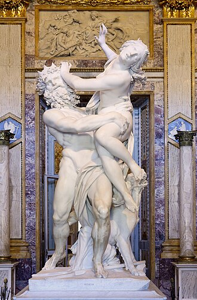 |
Proserpina'nın Kaçırılışı Bernini, 1621–22 |
Galleria Borghese, zemin kat | 19 / 21 (Bernini) |
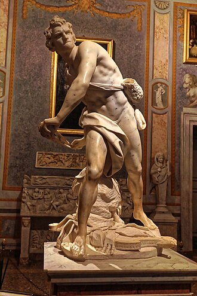 |
David Bernini, 1623–24 |
Galleria Borghese, zemin kat | 19 / 21 (Bernini) |
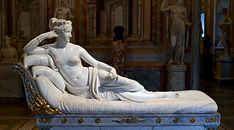 |
Pauline Bonaparte (Venüs Victrix) Canova, 1805–08 |
Galleria Borghese, zemin kat | Canova: tahminen 24 (Neoklasisizm), kontrol edin |
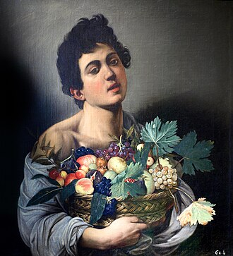 |
Meyve Sepetli Çocuk Caravaggio, ~1593 |
Galleria Borghese, Caravaggio odası | 19 (Caravaggio) |
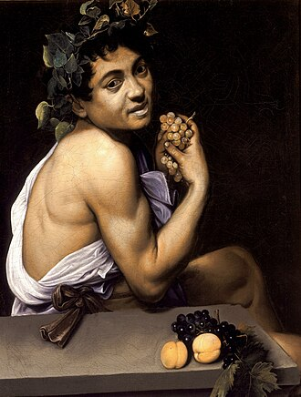 |
Hasta Bakkhus Caravaggio, ~1593 |
Galleria Borghese, Caravaggio odası | 19 (Caravaggio) |
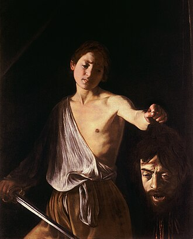 |
Goliat'ın Kellesini Tutan David Caravaggio, 1609–10 |
Galleria Borghese, Caravaggio odası | 19 (Caravaggio) |
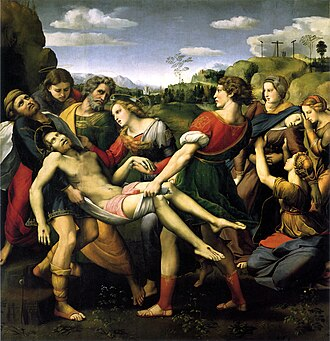 |
Mesih'in Gömülüşü Raphael, 1507 |
Galleria Borghese, üst kat (Pinacoteca) | 15 (Raphael) |
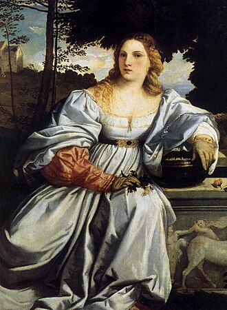 |
Kutsal ve Dünyevi Aşk Titian, ~1514 |
Galleria Borghese, üst kat (Pinacoteca) | 16 (Titian) |
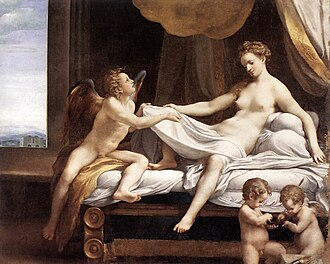 |
Danae Correggio, ~1531 |
Galleria Borghese, üst kat (Pinacoteca) | 16 (Correggio) |
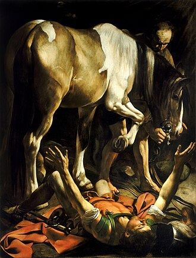 |
Pavlus'un Hidayeti Caravaggio, 1600–01 |
Santa Maria del Popolo, Cerasi Şapeli | 19 (Caravaggio) |
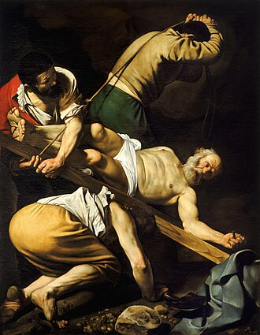 |
Petrus'un Çarmıha Gerilişi Caravaggio, 1600–01 |
Santa Maria del Popolo, Cerasi Şapeli | 19 (Caravaggio) |
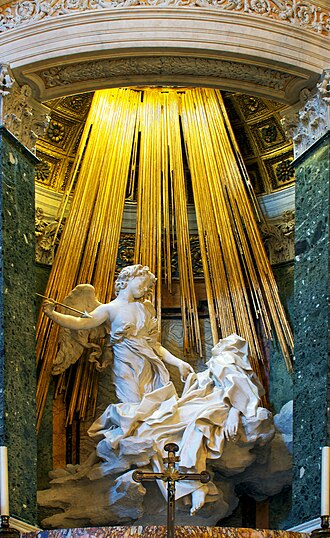 |
Aziz Teresa'nın Vecdi Bernini, 1647–52 |
Santa Maria della Vittoria, Cornaro Şapeli | 19 / 21 (Bernini) |
Apollo ve Daphne: Kardinal Scipione Borghese, Bernini'yi 1620'lerin başında daha 23 yaşındayken villasının heykelleri için tuttu. Ovidius'un Dönüşümler'indeki hikâyeyi seçen Bernini, Apollo'nun yakaladığı anda Daphne'nin ağaca dönüşmesini gösterir. Kaidedeki ahlaki beyit, ileride Papa Urbanus VIII olacak Maffeo Barberini'ye aittir: Geçici güzelliğin peşinden koşan elinde yaprak ve acı meyveden başka bir şey bulamaz. Bernini mermeri neredeyse hareketli göstermeyi hedefledi.
Proserpina'nın Kaçırılışı: Bernini bu grubu 1621–22'de, 23 yaşında Kardinal Scipione Borghese için yaptı. Pluto'nun parmaklarının Proserpina'nın baldırına gömüldüğü yer, mermeri yumuşak ete çevirme ustalığının gösterisidir. Bernini'nin amacı, antik heykelin ötesine geçip taşa hareket, duygu ve dokunma hissi vermekti. Köpek Kerberos'un da başı yanda görünür.
David (Bernini): Yine Scipione Borghese'nin siparişi olan bu heykelde David, sapanı gerdiği anda gösterilir. Michelangelo'nun sakin David'inden farklı olarak, hedefi izleyicinin bulunduğu yerdedir. Bernini'nin oğlu Domenico, David'in yüzünün Bernini'nin kendi yüzü olduğunu, aynaya bakarak çalıştığını yazar. Amaç Barok heykelin izleyiciyi sahnenin içine çekmesiydi.
Pauline Bonaparte (Venüs Victrix): Pauline, Napolyon'un kız kardeşi ve Prens Camillo Borghese'nin eşiydi. Neoklasik üslubun önde gelen ismi Canova (1757–1822) onu Paris'in ödülü olan elmayı tutan Venüs olarak yarı çıplak heykelleştirdi. Heykel Napolyon dönemi imparatorluk ikonografisini ve antik ideali birleştirir. Poz verirken rahatsız olup olmadığı sorulduğunda Pauline'in odanın sobayla ısıtıldığını söylediği anlatılır.
Meyve Sepetli Çocuk: Caravaggio Roma'ya yaklaşık 1592'de geldi ve parasız bir ressam olarak Cavaliere d'Arpino'nun atölyesinde çiçek ve meyve resimleri yaptı. Bu tablo, gençlik dönemi bir tür sahnesi ve natürmort karışımıdır. Meyvelerdeki solmuş yapraklara kadar giden titizlik, ressamın doğaya sadık kalma isteğini gösterir.
Hasta Bakkhus: Caravaggio'nun hastaneden çıktıktan sonra yaptığı bir otoportre olarak anılır. Şarap tanrısı idealize edilmiş bir tanrı gibi değil, solgun tenli ve yorgun bir genç gibidir. Ressam hem kendi durumunu hem de mitolojiyi günlük gerçeklikle birleştirmiştir.
Goliat'ın Kellesini Tutan David: 1606'da bir kavga sırasında Ranuccio Tomassoni'yi öldüren Caravaggio, Roma'dan kaçtı ve ölüm cezasıyla yaşadı. Bu tablonun 1609–10'da af umuduyla Kardinal Scipione Borghese'ye gönderildiği anlatılır. Goliat'ın kesik başının Caravaggio'nun kendi yüzü olduğu düşünülür. David'in bakışı nefretten çok hüzün ve merhametle doludur. Sanatçı kendisini mahkûm eden ve af dileyen taraf olarak resmetmiştir.
Mesih'in Gömülüşü: Perugia'daki bir şapel için 1507'de sipariş edildi. Atalanta Baglioni, oğlunun cinayetle öldürülmesinin ardından bu resmi yaptırdı. Raphael'in Michelangelo ve Roma'daki heykellerden etkilendiği bir geçiş eserinde Meryem'in bayılışı dramatik biçimde gösterilir. Eser 1608'de Papa V. Paulus'un yeğeni Scipione Borghese'nin koleksiyonuna alındı.
Kutsal ve Dünyevi Aşk: Titian bu tabloyu yaklaşık 1514'te, Venedikli Niccolò Aurelio'nun evliliği için yaptı. Sarkofajdaki armanın eşi Laura Bagarotto'yla ilişkilendirildiği söylenir. İki kadından biri giyinik ve gelin gibi, öteki çıplak ve alevli bir lamba tutar. Neoplatoncu yoruma göre biri dünyevi, öteki göksel aşktır. Eserin başlığı sonradan eklenmiş ve yorumu hâlâ tartışılır.
Danae: Correggio'nun (yaklaşık 1489–1534) bu tablosu, Mantova hükümdarı Federico II Gonzaga için Jüpiter'in aşkları serisinin bir parçası olarak yapıldı. Konu, altın yağmuruna dönüşen Jüpiter'in Danae'ye gelişi. Küçük aşk tanrıları altın paraları dener gibi bakar. Correggio mit sahnesini yumuşak ışık ve duyusal bir dokuyla Rönesans sarayının zevkine uyarladı.
Pavlus'un Hidayeti: Papalık hazinedarı Tiberio Cerasi, Santa Maria del Popolo'daki şapeli için 1600'de Caravaggio'dan iki tablo istedi, sunak tablosu ise Annibale Carracci'nin Meryem'in Göğe Yükselişi idi. Caravaggio'nun ilk versiyonları reddedilince tabloları yeniden yaptığı anlatılır. Pavlus'un hidayeti, görkemli bir mucize yerine yere düşen adamın üstüne at ve ışıkla gösterilir. Caravaggio'ya göre ilahi müdahale, insanın içinde yaşadığı bir şok olarak ortaya çıkar.
Petrus'un Çarmıha Gerilişi: Cerasi Şapeli'nin karşı duvarında Caravaggio, Petrus'un baş aşağı gerilişini üç işçinin ağır haçı kaldırmaya çalıştığı bir an olarak gösterir. İşçilerin yüzleri neredeyse hiç görünmez, Petrus'un gözleri ise şaşkınlıkla bir yere bakar. Bu şiddet görkemsiz ve sıradandır. Caravaggio kutsal sahneyi bir işçi sahnesine çevirerek Kilise'ye insani bir mesaj verdi.
Aziz Teresa'nın Vecdi: Venedikli kardinal Federico Cornaro, Santa Maria della Vittoria'daki şapelini Bernini'ye 1647'de ısmarladı. Bernini, İspanyol mistik Aziz Teresa'nın otobiyografisindeki melek okunun kalbine saplanması anını mermere çevirdi. Üstteki altın ışınlar ve şapelin duvarlarında Cornaro ailesi üyelerinin tiyatro localarından izler gibi durması Barok'un tiyatral anlayışını gösterir. Bernini bunu kendi en iyi eseri saymıştır. Amacı, inananın mistik deneyimi yaşamasıydı.
| Resim | Eser | Nerede | Sanatın Öyküsü |
|---|---|---|---|
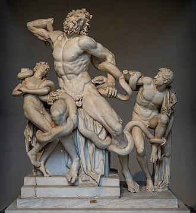 |
Laokoon ve Oğulları Hellenistik, Roma kopyası |
Vatikan Müzeleri, Pio-Clementino (Octagon Avlusu) | 4 (Hellenistik heykel) |
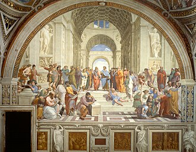 |
Atina Okulu Raphael, 1509–11 |
Vatikan Müzeleri, Raphael Odaları, Stanza della Segnatura | 15 (Raphael) |
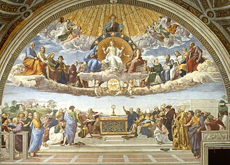 |
Disputa (Sakrament Tartışması) Raphael, 1509–10 |
Vatikan Müzeleri, Stanza della Segnatura | 15 (Raphael) |
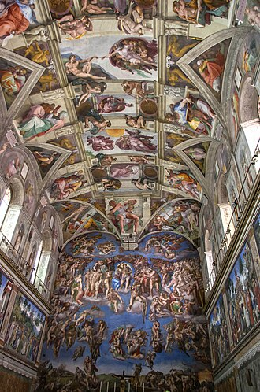 |
Sistina Şapeli tavanı Michelangelo, 1508–12 |
Vatikan Müzeleri, Sistina Şapeli | 15 (Michelangelo) |
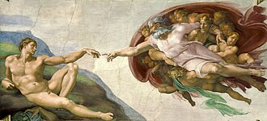 |
Adem'in Yaratılışı Michelangelo, ~1512 |
Sistina Şapeli, tavanın ortası | 15 (Michelangelo) |
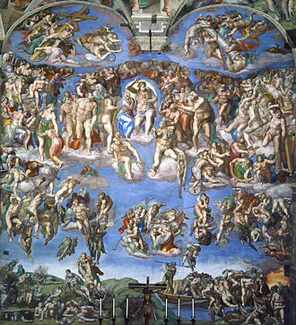 |
Son Yargı Michelangelo, 1536–41 |
Sistina Şapeli, altar duvarı | 15, geç dönem için 18'e de bakın |
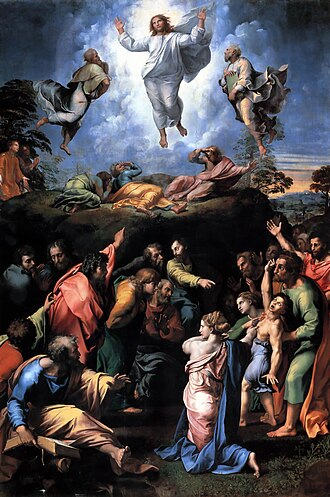 |
Transfigürasyon Raphael, 1516–20 |
Vatikan Müzeleri, Pinacoteca | 15 (Raphael) |
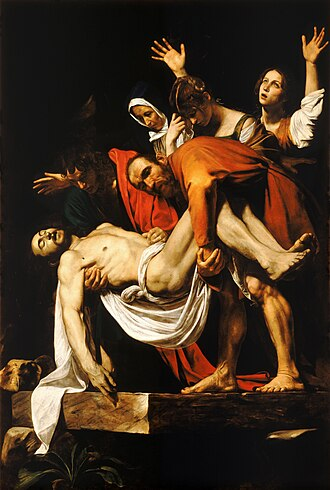 |
İndirilme Caravaggio, 1602–04 |
Vatikan Müzeleri, Pinacoteca | 19 (Caravaggio) |
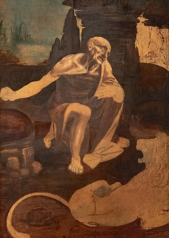 |
Çölde Aziz Jerome (bitmemiş) Leonardo, ~1480 |
Vatikan Müzeleri, Pinacoteca | 15 (Leonardo) |
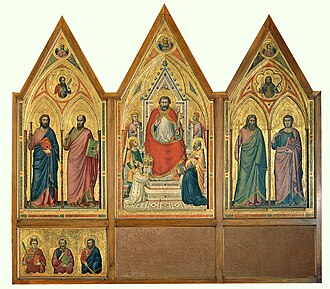 |
Stefaneschi Triptiği Giotto, ~1320 |
Vatikan Müzeleri, Pinacoteca | 11 (Giotto) |
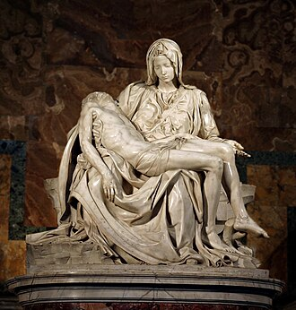 |
Pietà Michelangelo, 1498–99 |
San Pietro Bazilikası, girişte sağ şapel | 15 (Michelangelo) |
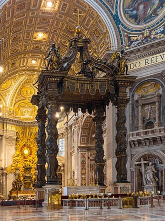 |
Baldacchino Bernini, 1624–33 |
San Pietro Bazilikası, ana sunak | 19 / 21 (Bernini) |
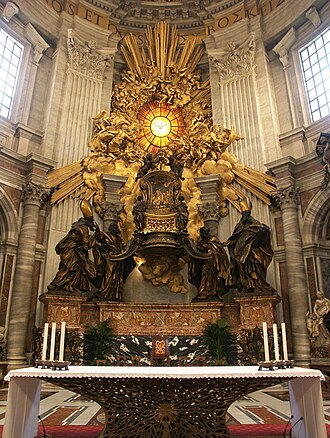 |
Cathedra Petri Bernini, 1657–66 |
San Pietro Bazilikası, apsis | 19 / 21 (Bernini) |
Laokoon ve Oğulları: Grup 1506'da Roma'da bir bağda bulundu, Papa II. Julius satın aldı ve Belvedere Avlusu'na koydurdu. Michelangelo ve Giuliano da Sangallo bulunuşta hazır bulundu denir. Bu, Plinius'un yazdığı ve Rodoslu üç heykeltraşa (Agesandros, Athenodoros, Polydoros) atfettiği heykel olarak tanındı. Truva rahibinin ve oğullarının acısı, Michelangelo'dan Barok sanatçılara kadar sonraki heykeltraşları etkiledi.
Atina Okulu: II. Julius, Vatikan'daki özel kütüphane odası Stanza della Segnatura'yı dört bilgi alanına ayırdı: teoloji, felsefe, şiir ve hukuk. Raphael, Bramante'nin tavsiyesiyle Roma'ya çağrıldı (1508) ve felsefe duvarına Atina Okulu'nu 1509–11'de yaptı. Merkezde Platon ve Aristoteles vardır. Platon'un Leonardo'ya, tek başına oturan Herakleitos'un Michelangelo'ya benzetildiği anlatılır, Raphael ise sağ kenarda kendisini de koymuştur. Amaç, antik bilgeliği Hristiyan Roma'ya uyumlu göstermekti.
Disputa (Sakrament Tartışması): Stanza della Segnatura'nın teoloji duvarı, Raphael'in Roma'daki ilk büyük işidir. Üstte cennet, altta sunakta Kutsal Ekmek çevresinde toplanmış kilise babaları ve Dante gibi figürler görülür. Karşı duvardaki Atina Okulu ile birlikte, felsefe ile teolojinin birbirini tamamladığı fikri sunulur. Julius'un amacı papalığın hem manevi hem entelektüel otoritesini göstermekti.
Sistina Şapeli tavanı: Papa II. Julius 1508'de Michelangelo'ya Sistina tavanını boyatmak istedi. Michelangelo kendini ressam değil heykeltıraş sayıyordu ve işe isteksiz başladı, bunun rakiplerinin onu başarısızlığa uğratma planı olduğunu düşündüğü söylenir. Dört yıl (1508–12) boyunca neredeyse tek başına çalıştı. Merkezde Yaratılış'tan Tufan'a dokuz Tevrat sahnesi, çevresinde peygamberler ve sibyller var. Tavan, Michelangelo'nun heykelsi figür anlayışını freske uyguladığı yerdir.
Adem'in Yaratılışı: Tavanın merkezindeki dokuz sahneden biri olan Adem'in Yaratılışı, yaklaşık 1511–12'de yapıldı. Tanrı ve Adem'in parmakları arasındaki küçük boşluk, hayatın başlangıcındaki an olarak yorumlanır. Michelangelo'nun amacı insan bedenini Tanrı'nın suretinde ve yüce olarak göstermekti.
Son Yargı: Papa VII. Clemens Michelangelo'dan altar duvarını boyamasını istedi, ancak iş 1534'te tahta çıkan Papa III. Paulus döneminde 1536–41'de tamamlandı. 1527 Roma Yağması ve Reform'un yarattığı kaygılı atmosferde Mesih'in yargısı çevresinde dönen devasa bir kalabalık görülür. Aziz Bartholomeus'un elindeki deri, Michelangelo'nun yüzüne benzetilir. Trento Konseyi sonrası bazı çıplaklar sonradan örtüldü.
Transfigürasyon: Kardinal Giulio de' Medici, sonradan Papa VII. Clemens, bu tabloyu Fransa'daki Narbonne Katedrali için Raphael'den istedi. Raphael 1520'de 37 yaşında ölünce eser tamamlanmamıştı, öğrencileri Giulio Romano ve Gianfrancesco Penni bitirdi. Üstte Mesih'in ışıkla yükselişi, altta ise hasta çocuğu getiren çaresiz insanlar vardır. Raphael, ilahi olanla insani olanı tek tablo içinde karşıt tutarak gösterir.
İndirilme: Caravaggio bu tabloyu Roma'da Chiesa Nuova (Santa Maria in Vallicella) için, Pietro Vittrice'nin şapeli adına yaptı. Mesih'in ağır, cansız bedeni sarkan koluyla öne çıkar. Caravaggio hiçbir şekilde süslemez, bu yüzden sahne bir inanç töreni gibi değil gerçek bir acı olayı olarak yaşanır.
Çölde Aziz Jerome: Leonardo'nun yaklaşık 1480'de, Floransa'da, kim için yaptığı bilinmeyen bitmemiş tablosudur. Kahverengi alt boyaması görünür, bu yüzden anatomi ve duygu ifadesindeki çalışma yöntemini gösterir. Hikâyeye göre 19. yüzyılda parçalarının ayrı yerlerde (bir parçası bir antikacıda, başı bir ayakkabı tamircisinin dükkânında) bulunduğu anlatılır. Leonardo burada Jerome'un kendini cezalandırmasındaki ıstırabı bedensel olarak göstermeye odaklandı.
Stefaneschi Triptiği: Kardinal Jacopo Stefaneschi, eski San Pietro'nun yüksek sunağı için 1320 civarında Giotto'ya bu triptiği yaptırdı. Ön yüzde tahtta Mesih ve yanında Aziz Petrus ve Pavlus, solda diz çökmüş kardinal vardır. Giotto'nun (yaklaşık 1267–1337) hacimli, doğal figürleri Bizans'ın donuk üslubundan kopuşun işaretidir. Kardinalin kendisini dindar bir bağışçı olarak göstermesi dönemin yaygın âdetiydi.
Pietà: Fransa'nın Vatikan elçisi Kardinal Jean de Bilhères, kendi mezar şapeli için 1498'de Michelangelo'ya bir Pietà ısmarladı. Michelangelo 23 yaşındaydı. Meryem'in oğlundan genç görünmesini, iffetli kadınların yaşlanmayacağı biçiminde açıkladığı aktarılır. Meryem'in göğsündeki şeritte imzası vardır, bu imzanın nedeninin eserin bir başkasına atfedilmesine duyduğu kızgınlık olduğu anlatılır.
Baldacchino: Papa VIII. Urbanus (Barberini) 1624'te Bernini'ye Aziz Petrus'un mezarının üzerine dikilecek bu görkemli gölgelik için sipariş verdi. Bernini o zaman 25 yaşındaydı. Sarmal sütunlar ve Barberini ailesinin arı motifleri taşır. Bronzun Pantheon'un portikosundan alındığı söylenir, Roma halkı bunu "Barbarların yapmadığını Barberini'ler yaptı" diye alaya almıştı. Amaç, Kilise'nin kutsal merkezini görkemli bir sahneye çevirmekti.
Cathedra Petri: Papa VII. Alexander, Bernini'ye 1657'de Aziz Petrus'un tahtını koruyan bir anıt istedi. Bernini yaklaşık 60 yaşındaydı. Dört büyük kilise babası, altın ışıkla çevrili Petrus'un tahtını taşır gibi gösterilir, üstte pencere ve Kutsal Ruh güvercini vardır. Eser, Karşı-Reform döneminde papalık otoritesinin sahnelenmesidir.
Gian Lorenzo Bernini (1598–1680): Napoli doğumlu, Roma'da yetişen heykeltıraş, mimar ve ressam. Barok'un en büyük ismidir. Kardinal Scipione Borghese'nin ve ardından papaların (Urbanus VIII, Alexander VII) himayesinde çalıştı. Amacı, mermeri ve bronzu hareket, duygu ve tiyatro etkisiyle konuşturmak, izleyiciyi sahnenin içine çekmekti.
Caravaggio (Michelangelo Merisi, 1571–1610): Kuzey İtalya'dan 1592 civarı Roma'ya gelen ressam. Sert ışık-gölge (tenebrizm) ve sokaktan alınan modellerle kutsal sahneleri gerçek insanlarla kurdu. Kavgacı mizacıyla bilinir, 1606'da cinayet işleyip Roma'dan kaçtı ve 1610'da af beklerken öldü. Amacı doğadan kopyalamak, kutsalı sıradan insanın düzeyinde göstermekti.
Michelangelo Buonarroti (1475–1564): Floransalı heykeltıraş, ressam ve mimar, kendisini her şeyden önce heykeltıraş sayardı. Papa II. Julius'un mezar projesi onun hayatının "trajedisi" oldu. İnsan bedenini ilahi güzelliğin ve ruhun taşıyıcısı olarak gördü, taşın içindeki figürü serbest bıraktığına inandı.
Raffaello Sanzio (Raphael, 1483–1520): Urbino doğumlu, Perugino'nun çırağı. Floransa'da Leonardo ve Michelangelo'yu inceledikten sonra 1508'de Roma'ya çağrıldı. Papa II. Julius ve X. Leo'nun resmî ressamıydı ve 37 yaşında öldü. Amacı uyum, denge ve netlikti, Rönesans'ın "yüksek" dengesinin simgesi sayılır.
Leonardo da Vinci (1452–1519): Vinci doğumlu, Verrocchio'nun atölyesinde yetişen ressam, mühendis ve bilim insanı. Kâğıt üzerindeki gözlemleri (anatomi, ışık, su) resimlerinden çok sayıdadır. Çoğu işini bitirmedi, mükemmeliyetçi ve meraklı bir kişiydi.
Titian (Tiziano Vecellio, ~1488–1576): Venedik'in baş ressamı. Rengi ve fırça darbesini çizginin önüne koyan Venedik geleneğinin ustası. Papalar, krallar ve İmparator V. Karl için çalıştı.
Antonio da Correggio (~1489–1534): Parma'da çalışan ressam. Yumuşak ışık geçişleri ve duyusal figürleriyle Barok'u önceden haber verdi.
Giotto di Bondone (~1267–1337): Floransalı ressam. Bizans'ın donuk figürlerinden kopup hacim ve doğal duyguyu resme getiren isim, Rönesans'ın öncüsü sayılır.
Andrea Pozzo (1642–1709): Trento doğumlu, Cizvit kardeşi (rahip olmayan üye). Göz yanılsamasıyla (trompe-l'œil) mimari kubbeler ve tavanlar yaptı, perspektif üzerine bir kitap yazdı. Amacı Cizvit misyonunu ve inancı görsel şaşkınlıkla anlatmaktı.
Antonio Canova (1757–1822): Venedik yakınlarında Possagno'da doğan Neoklasik heykeltıraş. Antik Yunan-Roma idealini cilalı mermerle yeniden yorumladı, Napolyon ve ailesi için çalıştı.
Bölüm numaraları kitabın İngilizce baskısındaki sıraya göredir. Türkçe baskıda başlıklar farklı çevrilmiş olabilir, kitabın içindekiler sayfasından kontrol edin. Her gün öncesi o günün bölümünü okuyun.
| Gün | Bölümler | Neden |
|---|---|---|
| Cuma (Pantheon, Navona, Caravaggio kiliseleri) | 19 (Vision and Visions, 17. yy. başı), 21 (Power and Glory I, Barok İtalya) | Caravaggio, Bernini, Borromini, Pozzo |
| Cumartesi (antik Roma) | 4 (Güzellik Diyarı) ve 5 (World Conquerors, Roma sanatı) | Roma mimarisi, kemer ve beton, portre heykeli, zafer takları. Pantheon ve Kolezyum'un kitaptaki yeri. Hellenistik heykel (Laokoon, Ölen Galyalı) için de bakılır |
| Cumartesi (🔸 Moses) | 15 (Harmony Attained) | Michelangelo ve II. Julius mezarı (burda kaldık) |
| Pazar (Borghese) | 19, 15 (Rafael), 16 (Light and Color: Titian) | Caravaggio, Bernini, Raphael, Titian |
| Pazartesi (Vatikan) | 13 (Tradition and Innovation I, 15. yy. İtalya), 15 (Harmony Attained: Leonardo, Rafael, Michelangelo, Bramante ve San Pietro), 18 (A Crisis of Art), 21 | Sistina yan duvarları (15. yy.), Raphael Odaları, Michelangelo, Son Yargı sonrası Maniyerizm, Bernini |
| Trastevere (isteğe bağlı) | 6 ve 8 (erken Hristiyan, Bizans ve ortaçağ mozaikleri) | Santa Maria in Trastevere apsis mozaikleri |
Okuma kısa sürecekse öncelik: 15 → 19 → 5.
Kitap Rönesans'la başlıyor, antik Roma yok. Sayfa numaraları kitabın basılı sayfa numaralarıdır (içindekiler sayfasına göre), PDF sayfa numarası değil.
| Bölüm | Sayfa | Roma ile bağlantısı |
|---|---|---|
| 2. Rönesans, özellikle "Rönesans Sanatı" ve "Rönesans'ın Sonu" (Yabancı İstilası, Machiavelli) | s. 72–108 (sanat: 91–102) | Papalık himayesi, Raphael, Michelangelo, Bramante; Vatikan günü öncesi |
| 3. İki Reformasyon: Reformasyon'un Kökenleri (Din Adamlarının İstismarları ve Endüljanslar, Luther) | s. 115–126 | Endüljans satışı San Pietro'nun yapımını finanse etmişti |
| 3. İki Reformasyon: Katolik Reformasyonu (Trento Konseyi, Cizvitler) ve "Barok Üslup" | s. 147–156 | Karşı-Reform sanatı: Barok, Bernini, Sant'Ignazio, Caravaggio kiliseleri |
| 7. Mutlakiyet Çağı: "Mimaride ve Sanatta Anıtsalcılık" | s. 284–301 | Barok mimari ve iktidar gösterisi (Navona, San Pietro meydanı) |
| 13. Napoleon ve Avrupa: Konkordato (Papalıkla Anlaşma) | s. 531–544 | Napoleon ve Papalık ilişkisi |
| 15. Restorasyon Avrupa'sı: Romantizm | s. 636–639 | Borghese ve 19. yy. kültürü için arka plan |
| 16. 1848 Devrimleri: İtalyan Devletlerinde Devrim ve Karşı Devrim | s. 670–683, 689–698 | 1849 Roma Cumhuriyeti, Garibaldi ve Janiculum |
| 17. Milli Birleşme Dönemi: İtalya'nın Siyasal Birleşmesi | s. 707–719 | 1870'de Roma'nın alınması, Vittoriano (Piazza Venezia), Janiculum'daki Garibaldi anıtı |
| 25. İktisadi Çöküntü ve Diktatörlük Avrupa'sı: İtalya'da Mussolini ve Faşizm | s. 1070–1080 | Piazza Venezia balkonu, Fori Imperiali yolu, 1929 Lateran Antlaşmaları (Vatikan Devleti) |
Günlere göre: - Cuma: Bölüm 3 (Katolik Reformasyonu, Barok) ve Bölüm 7 (Mimaride Anıtsalcılık). - Cumartesi: Bölüm 17 (Roma'nın alınışı, Vittoriano) ve Bölüm 25 (Mussolini). - Pazar: Bölüm 15, kısa. - Pazartesi: Bölüm 2 (Rönesans Sanatı), Bölüm 3 (Endüljanslar), Bölüm 13 (Konkordato).
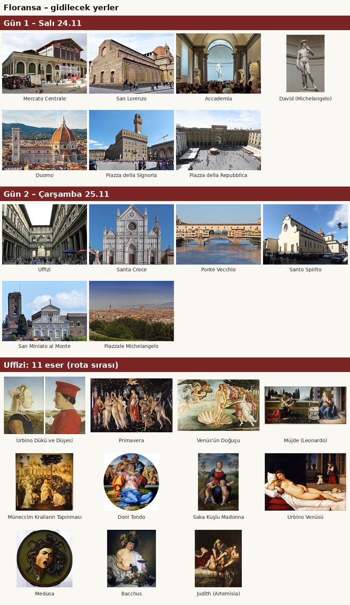
Görseller Wikipedia/Wikimedia Commons'tan alınmış küçük önizlemelerdir (lisans ve sahip bilgileri ilgili Wikipedia/Commons sayfalarında).
Kaynaklar:
Gezi Planları/Kaynaklar/Floransa/klasöründeki 8 görsel (roter.in'in 3 günlük ve 4 günlük Floransa planları) ve video (biaskbirota'nın "Uffizi'de kaçırılmaması gereken 11 eser" gönderisi ile lifelogdrift'in Floransa rehberi). Rick Steves ile karşılaştırma en altta. Açılış saatleri ve fiyatlar gönderilerden alındı, gitmeden resmî sitelerden kontrol edin. 🔸 = görsellerde yok, benim önerim.
Roma'dan sonra 2 gün: Salı ve Çarşamba. Bilet saatleri sabit, planın geri kalanı bunların etrafına kuruldu.
| Gün | Tarih | Bölge | Bilet durumu |
|---|---|---|---|
| 1 | Salı 24.11 | Varış ~11:00, Mercato, San Lorenzo, Accademia 14:00, Duomo, Rönesans yürüyüşü (roter.in "Dia 1" + "Dia 2"nin Signoria ayağı) | Accademia: alındı ✅ (14:00) |
| 2 | Çarşamba 25.11 | Uffizi 10:00, Santa Croce, Ponte Vecchio, Oltrarno, Piazzale Michelangelo gün batımı (roter.in "Dia 2" + "Dia 3" + "Dia 4"ten seçmeler) | Uffizi: alındı ✅ (10:00) |
Not: roter.in'in 3 ve 4 günlük planlarındaki Palazzo Pitti, Boboli, Giardino Bardini, San Frediano ve Santa Maria Novella 2 güne sığmıyor. "Sığmayanlar" bölümünde.
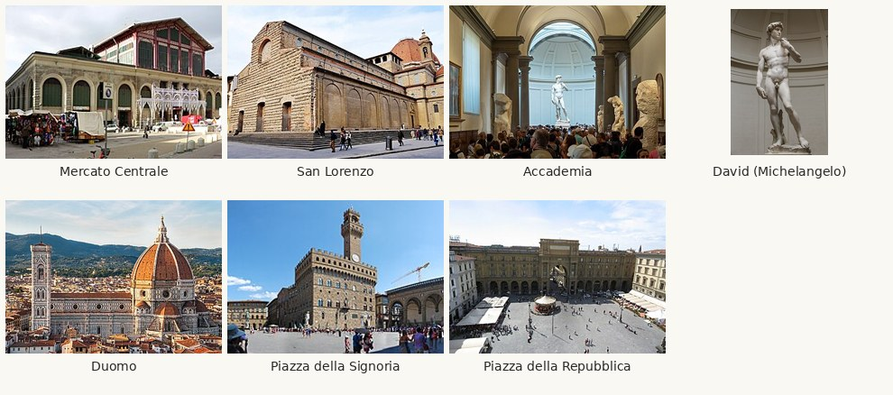
Floransa'ya ~11:00'de varış varsayıldı (Roma'dan sabah treni). Accademia 14:00'e sabit, bu yüzden Duomo öğleden sonraya kaydı, San Marco programdan çıktı. Roter.in'in "Dia 1" sırası (Duomo → Accademia → Mercato → San Lorenzo) bizde Mercato → San Lorenzo → Accademia → Duomo oldu.
Yemek/etkinlik (lifelogdrift'ten): Wine Window'dan (buchetta) şarap al, Pasta ve Tiramisu atölyeleri, Oltrarno'da antika pazarı, Vespa turu. Hiçbiri sabit değil, boş akşam için.
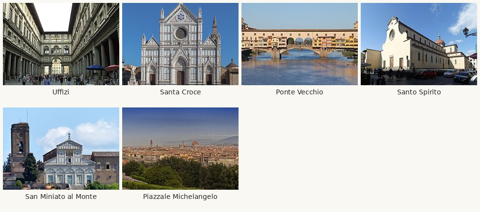
Haritadaki sıra: Uffizi → Ponte Vecchio → Oltrarno → Piazzale Michelangelo. Santa Croce roter.in'in "Dia 2"sinde sabah 09:00 idi, bizde Uffizi'den sonra.
Gün 2 için dikkat: kasım ayında Boboli ve müzeler erken kapanır, bu yüzden Pitti/Boboli programa girmedi.
| Yer | Neden dışarıda | Nerede olurdu |
|---|---|---|
| Palazzo Pitti + Boboli | Tam 3–4 saat, kasımda erken kapanır | roter.in "Dia 3" sabahı |
| Giardino Bardini | Piazzale Michelangelo yolunda, bahçe saatleri kısa | "Dia 4" |
| 🔸 San Marco Müzesi | Hafta içi erken kapanıyor olabilir (kontrol edin), Salı'ya sığmadı. Fra Angelico, Rick Steves sesli tur | Rick Steves 1. gün 10:30 |
| 🔸 Bargello | Heykel (Donatello'nun David'i), Rick Steves sesli tur | Rick Steves'ın 2. günü 09:00 |
| 🔸 Duomo Müzesi | Michelangelo'nun geç dönem Pietà'sı (Floransa Pietà'sı), Donatello'nun Magdalena'sı, Ghiberti'nin Cennet Kapısı'nın orijinal panelleri | Rick Steves 2. gün |
| Santa Maria Novella | Masaccio'nun Trinità'sı, Ghirlandaio | lifelogdrift ve Rick Steves |
| San Frediano | Akşam yemeği için Oltrarno'da zaten uğranır | roter.in "Dia 3" |
| Yer | Eserler / ne bakılacak |
|---|---|
| Duomo (Santa Maria del Fiore) | Brunelleschi'nin kubbesi (1420–36, iskelesiz, çift kabuklu), Giotto'nun Çan Kulesi, iç mekândaki Uccello ve Castagno'nun atlı anıt freskleri 🔸 |
| Vaftizhane | Ghiberti'nin Cennet Kapısı (kopya, orijinali Duomo Müzesi'nde), mozaik tavan 🔸 |
| 🔸 San Marco Müzesi (programda yok, sığarsa) | Fra Angelico: Müjde (merdivenin başında), hücre freskleri, Savonarola'nın hücresi |
| San Lorenzo | Brunelleschi mimarisi, Eski Sakristiye, Donatello'nun kürsüleri 🔸 |
| Accademia | Michelangelo: David (1501–04), yarım kalmış Prigioni (Köleler), Aziz Matta; Giambologna'nın Sabin Kadınlarının Kaçırılması alçı modeli 🔸 |
| Piazza della Signoria | Cellini: Perseus; Neptün Çeşmesi (Ammannati); Loggia dei Lanzi: Giambologna'nın Sabin Kadınlarının Kaçırılması; David kopyası; Savonarola'nın yakıldığı yer (zeminde plaket) |
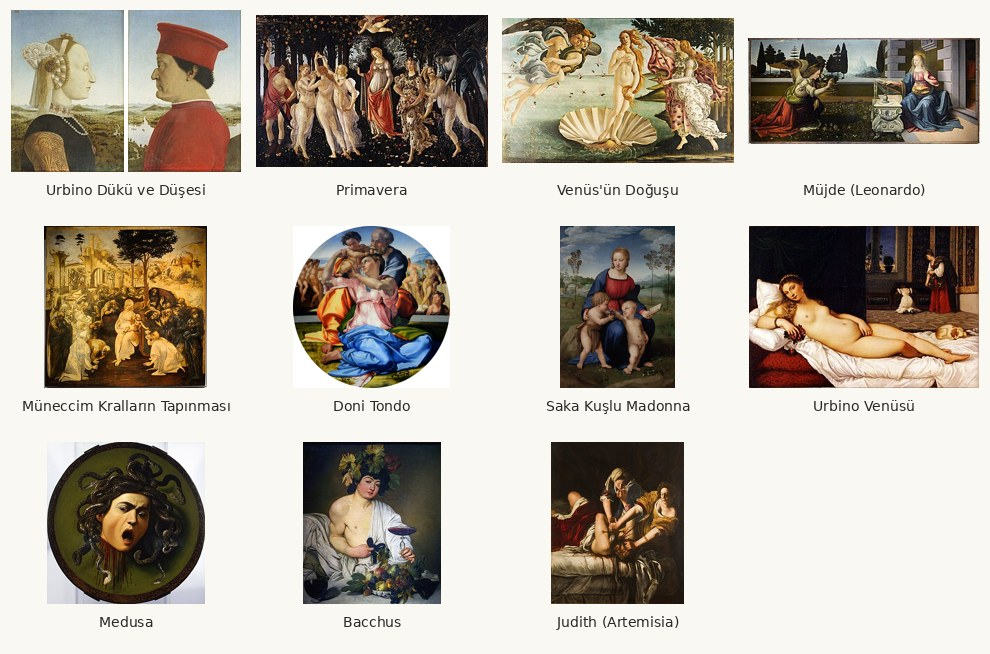
Uffizi kronolojik dolaşılır, bu yüzden aşağıdaki sıra, galerideki rota sırasına yakındır. Odalar zaman zaman değişir, tabelaları izleyin. Başlıklar videodaki gibi (tarihler orada yazıldığı gibi).
| # | Eser | Ne bakılacak (videodan) |
|---|---|---|
| 8 | Urbino Dükü ve Düşesi, Piero della Francesca, 1473–75 | Rönesans'ın en ünlü çift portresi. Federico da Montefeltro yalnızca sol profilden resmedilmiş, çünkü bir turnuvada sağ gözünü ve burnunun bir kısmını kaybetmişti |
| 6 | Primavera, Botticelli, 1480 | Bahar ve doğanın mitolojik anlatımı, ortada Venüs, üzerinde gözleri bağlı Cupid. Tabloda yaklaşık 200 farklı bitki türü teşhis edilmiş |
| 10 | Venüs'ün Doğuşu, Botticelli, 1485 | Venüs'ün yüzü, Botticelli'nin de aşık olduğu söylenen Simonetta Vespucci'den esinlenmiş. Saçlarda gerçek altın kullanılmış |
| 1 | Müjde, Leonardo da Vinci, 1472 | Leonardo'nun henüz 20'li yaşlarının başında yaptığı erken eser. Cebrail'in kanatları gerçek bir kuş gibi incelenmiş. Uzaktaki dağlar ve puslu manzara (atmosferik perspektif) |
| 9 | Müneccim Kralların Tapınması, Leonardo, 1481 | Yarım kaldı. Bitmiş eserlerinden farklı olarak ilk çizgileri ve çalışma sürecini görürüz, dev bir eskiz gibi |
| 3 | Doni Tondo, Michelangelo, 1505–06 | Michelangelo'nun günümüze ulaşan tamamlanmış tek bağımsız panel resmi. Figürler heykel gibi kaslı, hacimli |
| 11 | Saka Kuşlu Madonna, Raphael, 1506 | Meryem'in önündeki çocuk İsa ve Vaftizci Yahya arasındaki saka kuşu, İsa'nın çarmıha gerilişini simgeliyor |
| 4 | Urbino Venüsü, Titian, 1538 | Resmediliş biçimiyle cesur bir kompozisyon, arka planda hizmetçiler ve çeyiz sandığı, ayak ucunda uyuyan küçük köpek sadakati simgeliyor. Manet'nin Olympia'sına ilham verdi |
| 2 | Medusa, Caravaggio, 1597 | Kesilmiş baş, bir kalkan üzerine. Dehşet içindeki yüz için kendi yüz hatlarından yararlandığı düşünülüyor |
| 7 | Bacchus, Caravaggio, 1598 | Şarap tanrısı gerçek bir genç adam gibi. Şarap kadehindeki yansımada ressama benzeyen küçük bir figür seçiliyor, tabloda gizlenmiş otoportre olabilir |
| 5 | Judith Holofernes'i Öldürürken, Artemisia Gentileschi, 1620 | Judith'in başı kesme anı sert ve gerçekçi. Artemisia'nın kendi hayatındaki şiddet deneyimiyle ilişkilendirilir |
Önerilen sıra: 8 → 6 → 10 → 1 → 9 → 3 → 11 → 4 → 2 → 7 → 5. Hızlı geçerseniz Botticelli ve Leonardo odalarında (6, 10, 1, 9) vakit ayırın, çünkü kalabalık orada olur. Video 11 eseri bunun sırasıyla (1'den 11'e) anlatıyor, biz rotaya göre dizdik.
Gönderi notu: Uffizi giriş 25 €, online 29 €, 16:00'dan sonra 16 € (önceden 20 €), Salı–Pazar 08:15–18:30, Pazartesi kapalı. Biletiniz hazır, ama bu bilgiler Ekim'deki gönderiden.
Uffizi'de video dışında kaçırmamak için 🔸 Giotto'nun Ognissanti Maestà'sı (Gombrich ch.11), Masaccio–Masolino Sant'Anna (ch.12) ve Caravaggio'nun İshak'ın Kurban Edilişi.
| Yer | Eserler / ne bakılacak |
|---|---|
| Santa Croce | Michelangelo, Galileo, Machiavelli ve Dante'nin (anıt mezar) mezarları; Giotto: Bardi ve Peruzzi şapelleri; Pazzi Şapeli (Brunelleschi); Donatello'nun Müjdesi 🔸 |
| Santo Spirito | Brunelleschi mimarisi; sakristide Michelangelo'ya atfedilen ahşap haç 🔸 |
| 🔸 Brancacci Şapeli (zaman kalırsa) | Masaccio: Cennetten Kovulma, Haraç Parası. Rönesans resminin başlangıcı |
| San Miniato al Monte | 12. yy. Romanesk cephe ve mozaikler |
| Piazzale Michelangelo | Panorama, David'in bronz kopyası |
Her eserin resmi, Floransa'da nerede olduğu ve E.H. Gombrich'in Sanatın Öyküsü'nde hangi bölümde ele alındığı. Bölüm numaraları kitabın İngilizce baskısındaki sıraya göre sanatçıya verilmiştir. Bu belirli eserin kitapta resimli ya da anılıp anılmadığını doğrulayamadım, bunun için kitabın sonundaki "List of illustrations by location" bölümünde Florence başlığına bakın. Emin olmadıklarımı "tahminen" diye yazdım.
| Resim | Eser | Nerede | Sanatın Öyküsü |
|---|---|---|---|
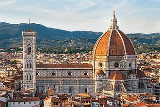 |
Duomo kubbesi Brunelleschi, 1420–36 |
Santa Maria del Fiore (Piazza del Duomo) | 12 (Brunelleschi) |
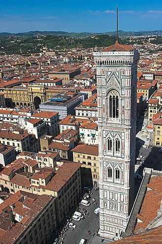 |
Çan Kulesi Giotto (başlayan), 1334'ten |
Piazza del Duomo | 11 (Giotto) |
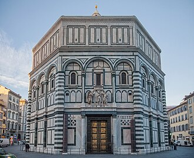 |
Cennet Kapısı Ghiberti, 1425–52 |
Vaftizhane, doğu kapısı (orijinal paneller Duomo Müzesi'nde) | 12 (Ghiberti) |
| David Michelangelo, 1501–04 |
Accademia | 15 (Michelangelo) | |
| Prigioni (Köleler / Atlas Köle) Michelangelo, ~1525–30 |
Accademia, David'e giden koridor | 15 (Michelangelo) | |
| Aziz Matta Michelangelo, 1506'dan |
Accademia, aynı koridor | 15 (Michelangelo) | |
| Perseus ve Medusa'nın Başı Cellini, 1545–54 |
Loggia dei Lanzi, Piazza della Signoria | tahminen 18, kontrol edin | |
| Sabin Kadınlarının Kaçırılışı Giambologna, 1581–83 |
Loggia dei Lanzi, Piazza della Signoria | tahminen 18, kontrol edin | |
| Neptün Çeşmesi Ammannati, 1560–75 |
Piazza della Signoria | tahminen 18, kontrol edin |
Duomo kubbesi: Santa Maria del Fiore'nin kubbesini yapma işi, yün tüccarları loncasının (Arte della Lana) yönettiği Opera del Duomo'ya aitti. 1418'de açılan yarışmayı, kuyumcu ve saat ustası kökenli Filippo Brunelleschi kazandı. İskele kurmadan, çift kabuklu ve balık kılçığı tuğla örgüsüyle yükselttiği kubbe 1436'da tamamlandı ve Papa IV. Eugenius tarafından kutsandı. Floransa'nın zenginliğini ve gururunu dünyaya gösteren bir kent projesiydi, Brunelleschi'nin Roma'da antik yapıları incelediği söylenir.
Çan Kulesi: Floransa Cumhuriyeti'nin Duomo yapı işlerinin başına 1334'te Giotto getirildi. Giotto 1337'de ölünce kulenin yalnızca alt bölümü bitmişti, çalışmayı Andrea Pisano ve Francesco Talenti sürdürdü. Renkli mermer kaplama, Duomo ve Vaftizhane ile uyum için seçildi. Çan Kulesi, Giotto'nun resim dışında mimar olarak da tanındığını gösterir.
Cennet Kapısı: 1401'de Vaftizhane'nin kuzey kapısı için açılan yarışmayı genç Lorenzo Ghiberti kazandı, rakibi Brunelleschi idi. Bu başarıdan sonra loncalar doğu kapısını da 1425'te ona verdi. Ghiberti yirmi yıl boyunca on bronz panelde perspektifle derinlik veren kabartmalar yaptı. Michelangelo'nun "cennetin kapısına yaraşır" dediği anlatılır ve adı buradan gelir. Kapıdaki paneller kopyadır, orijinalleri Duomo Müzesi'ndedir.
David: Duomo'nun yapı kurulu 1501'de Michelangelo'ya, daha önce iki ustanın yarıda bıraktığı kusurlu bir mermer bloğu verdi. Michelangelo 26 yaşındaydı. Heykel sonunda Duomo yerine Signoria'nın önüne konuldu (1504) ve Floransa Cumhuriyeti'nin özgürlük ve gücünü simgeledi. David, Goliat'a atıştan önceki tedirgin bekleyişte, yani eylemden önceki anda gösterilir. 1873'te Accademia'ya taşındı.
Prigioni (Köleler / Atlas Köle): Prigioni, II. Julius'un mezar anıtı projesinin Michelangelo'nun 1520'ler–30'lardaki versiyonları için yapılan bitmemiş figürlerdir. Mezar projesi bitmediği için heykeller yarım kaldı ve sonradan Boboli Bahçesi'nde görülüp Accademia'ya taşındı. Figürlerin taştan çıkıp çıkmadığı duygusu "non finito" olarak Michelangelo'nun sanatının merkezî fikridir. Michelangelo'ya göre heykeltıraş, taşın içindeki figürü serbest bırakırdı.
Aziz Matta: 1503'te yün tüccarları loncası Michelangelo'ya Duomo için on iki havari heykeli sözleşmesi verdi. Michelangelo yalnızca Aziz Matta'ya başladı, 1505'te II. Julius onu Roma'ya çağırınca işi bırakıp gitti. Yarım kalan heykel, figürün taştan sancılı biçimde çıkışını gösterir. Burada Michelangelo'nun çalışma yöntemi doğrudan görülür.
Perseus ve Medusa'nın Başı: Cellini bu bronz heykeli Floransa dükü Cosimo I de' Medici için yaptı. Medusa'nın başını kaldıran Perseus, Cosimo'nun muhalifleri yenen güçlü bir hükümdar olarak sunulması anlamına da gelir. Cellini otobiyografisinde dökümün bozulma tehlikesini ve evdeki kalay tabakları eriyiğe attığını dramatik anlatır. Cellini kuyumcu kökenliydi ve heykele ince bir işçilik getirdi.
Sabin Kadınlarının Kaçırılışı: Flaman kökenli Giambologna bu mermer grubu Francesco I de' Medici için yaptı. Konu başlangıçta belirsizdi, "Sabin Kadınlarının Kaçırılışı" adı sonradan verildi. Giambologna'nın amacı, tek bir mermer bloktan çok açılı bir gösteri yaratmaktı. Spiral kompozisyon izleyiciyi heykelin etrafında dolaşmaya zorlar.
Neptün Çeşmesi: Cosimo I, Floransa'nın deniz gücünü simgelemek için Signoria meydanına bir Neptün çeşmesi yaptırdı. Ammannati bunu 1560–75 arasında yaptı. Büyük mermer Neptün'ün çevresindeki bronz figürlere göre iri olması yüzünden halk eserle alay etti ve ona "Biancone" (beyaz dev) dedi. Ammannati o dönem Michelangelo'nun gölgesinde kalan bir ustaydı.
| Resim | Eser | Nerede | Sanatın Öyküsü |
|---|---|---|---|
| Urbino Dükü ve Düşesi Piero della Francesca, 1473–75 |
Uffizi | 12 (Piero della Francesca) | |
| Primavera Botticelli, ~1480 |
Uffizi | 13 (Botticelli) | |
| Venüs'ün Doğuşu Botticelli, ~1485 |
Uffizi | 13 (Botticelli) | |
| Müjde Leonardo da Vinci, ~1472 |
Uffizi | 15 (Leonardo) | |
| Müneccim Kralların Tapınması Leonardo, 1481 |
Uffizi | 15 (Leonardo) | |
| Doni Tondo Michelangelo, 1505–06 |
Uffizi | 15 (Michelangelo) | |
| Saka Kuşlu Madonna Raphael, 1506 |
Uffizi | 15 (Raphael) | |
| Urbino Venüsü Titian, 1538 |
Uffizi | 16 (Titian) | |
| Medusa Caravaggio, ~1597 |
Uffizi | 19 (Caravaggio) | |
| Bacchus Caravaggio, ~1598 |
Uffizi | 19 (Caravaggio) | |
| Judith Holofernes'i Öldürürken Artemisia Gentileschi, ~1620 |
Uffizi | Caravaggio çizgisinde, 19 civarı; Artemisia kitapta olmayabilir | |
| Pazzi Şapeli Brunelleschi, 1430'lardan |
Santa Croce, avlu | 12 (Brunelleschi) | |
| Haraç Parası Masaccio, ~1425 |
Brancacci Şapeli, Santa Maria del Carmine (zaman kalırsa) | 12 (Masaccio) |
Urbino Dükü ve Düşesi: Piero della Francesca bu çift portreyi Urbino dükü Federico da Montefeltro ve eşi Battista Sforza için yaklaşık 1472–75'te yaptı. Battista'nın 1472'de ölümünden sonra yapıldığı düşünülür. Federico yalnızca sol profilden gösterilir çünkü sağ gözünü bir turnuvada kaybetmişti. Arkadaki manzara ve arka yüzdeki zafer alayları, Piero'nun matematik ve perspektife duyduğu ilgiyi gösterir.
Primavera: Botticelli, bu tabloyu yaklaşık 1480'de Medici çevresi için, büyük olasılıkla Lorenzo di Pierfrancesco de' Medici için yaptı. Medici sarayının Neoplatoncu şairleri ve Poliziano'nun şiirleri etkili olmuştur. Ortada Venüs, solda Üç Güzeller, sağda Zefir ve Flora. Doğa, aşk ve bahar fikrini mitolojik bir sahneye çevirir.
Venüs'ün Doğuşu: Botticelli'nin bu tablosu Medici çevresi için, büyük olasılıkla Lorenzo di Pierfrancesco de' Medici'nin Castello villası için yapıldı. Venüs'ü büyük ölçekte çıplak bir ana figür olarak göstermek dönemin cesur bir tercihiydi. Neoplatoncu düşüncede Venüs hem insan güzelliğini hem ilahi aşkı temsil ederdi. Botticelli'nin amacı, antik tanrıçayı Hristiyan Floransa'ya kabul ettirmekti.
Müjde: Leonardo bu eseri Verrocchio'nun atölyesinde çırakken, yaklaşık 1472–75 arasında yaptı. Cebrail'in kanatları gerçek kuş kanatları incelenerek çizilmiştir. Uzaktaki dağlar ve puslu manzara atmosferik perspektifin erken örneğidir. Genç Leonardo bu tabloda doğayı gözlemek konusundaki merakını göstermiştir.
Müneccim Kralların Tapınması: Scopeto'daki San Donato manastırının rahipleri bu tabloyu 1481'de Leonardo'ya ısmarladı. Leonardo 1482'de Milano'ya, Ludovico Sforza'nın hizmetine gidince işi yarım bıraktı. Bu yüzden eser, Leonardo'nun çizim ve kompozisyon yöntemini gösteren dev bir eskiz gibidir. Kalabalık figürler hareketli ve duygulu bir sahne kurar.
Doni Tondo: Floransalı tüccar Agnolo Doni, bu yuvarlak tabloyu yaklaşık 1505–06'da Maddalena Strozzi ile evliliği ve kızlarının doğumu için Michelangelo'ya yaptırdı. Vasari'ye göre Doni fiyatı pazarlık etmeye kalkınca Michelangelo iki katını istedi ve Doni ödedi. Heykeltıraş Michelangelo'nun figürleri kaslı ve hacimlidir. Arkadaki çıplak gençler, Hristiyanlık öncesi dünyanın simgesi olarak yorumlanır.
Saka Kuşlu Madonna: Raphael bu tabloyu Floransa'da, yaklaşık 1506'da Lorenzo Nasi'nin evliliği için yaptı. Leonardo'nun piramit kompozisyonundan etkilenmiştir. Tablo 1547'de Nasi'nin evinin çökmesiyle parçalandı ve sonradan restore edildi. Saka kuşu, İsa'nın ilerideki çarmıha gerilişini simgeler.
Urbino Venüsü: Titian bu tabloyu 1538'de Urbino dükü Guidobaldo II della Rovere için yaptı, evlilik bağlamında yorumlanır. Uzanmış çıplak Venüs izleyiciye doğrudan bakar. Arka planda hizmetçiler bir çeyiz sandığını karıştırır, ayak ucundaki uyuyan köpek sadakati simgeler. Titian, Venedik'in renk ve ışık geleneğini göstermiştir. Manet'nin Olympia'sına ilham verdi.
Medusa: Caravaggio, Kardinal del Monte'nin himayesinde çalışırken, 1597–98'de bu kalkanı Toskana Büyük Dükü Ferdinando I de' Medici'ye hediye edilmek üzere yaptı. Medusa'nın başı, kalkan üzerinde canlı bir dehşet anında gösterilir. Yüz, Caravaggio'nun kendi yüz hatlarından yararlanıldığı düşünülen bir ifadeye sahiptir. Amaç, düşmanı korkutan bir kalkan motifini yeniden yorumlamaktı.
Bacchus: Bacchus'u Caravaggio, Kardinal del Monte çevresinde yaklaşık 1598'de yaptı. Şarap tanrısı idealize edilmiş bir tanrı gibi değil, gerçek bir genç adam gibi gösterilir. Şarap kadehindeki yansımada ressama benzeyen küçük bir figür seçildiği söylenir. Mitolojiyi günlük gerçeklikle birleştiren Caravaggio, "doğaya bak" ilkesini kutsal olmayan konuda da uyguladı.
Judith Holofernes'i Öldürürken: Artemisia Gentileschi, Caravaggio'nun etkisini taşıyan ressam Orazio Gentileschi'nin kızıydı. 1612'de resim hocası Agostino Tassi'nin tecavüzüne uğradı ve mahkemede ısrarla anlattı. 1613–20 arası Floransa'da yaşadı ve Cosimo II de' Medici'nin himayesinde çalıştı. Bu tabloyu yaklaşık 1620'de yaptı. Judith'in sert, güçlü anlatımı çoğu zaman kendi deneyimiyle ilişkilendirilir, ancak bu yorum tartışmalıdır.
Pazzi Şapeli: Brunelleschi'nin Santa Croce'nin avlusundaki bu şapeli, Floransalı bankacı Andrea de' Pazzi'nin siparişiyle 1430'larda başladı ve Brunelleschi 1446'da ölünce başka ustalarca tamamlandı. Sakin oranları, düz çizgileri ve kubbesiyle Rönesans mimarisinin saf geometri ideallerini gösterir. Pazzi ailesi 1478'de Medici'ye suikast girişimiyle (Pazzi Komplosu) tarihe geçti.
Haraç Parası: Felice Brancacci adlı zengin ipek tüccarı, 1420'lerde Santa Maria del Carmine'deki şapeli Masolino ve Masaccio'ya boyattı. Masaccio 27 yaşında öldü (1428), bu yüzden freskleri kısa bir işin parçasıdır. Haraç Parası'nda hacimli figürler ve tek yönden gelen ışık, perspektifle birleşerek Rönesans gerçekçiliğinin başlangıcı sayılır. Masaccio'nun etkisi Michelangelo'ya kadar uzanır.
Michelangelo, Leonardo, Raphael, Titian, Giotto, Caravaggio ve Correggio için yukarıdaki Roma bölümüne bakın.
Filippo Brunelleschi (1377–1446): Kuyumcu ve saat ustası olarak başladı, Roma'da antik yapıları inceledi. Doğrusal perspektifi geliştiren ve Duomo kubbesini yapan isim, Rönesans mimarisinin kurucusudur. Amacı antik düzeni, oran ve geometriyi Floransa'ya taşımaktı.
Lorenzo Ghiberti (1378–1455): 1401'de Vaftizhane kapısı yarışmasını kazanan kuyumcu-heykeltıraş. Hayatının büyük bölümünü bu kapılara verdi. Amacı, bronz kabartmada resmin derinliğini, yani perspektifi göstermekti.
Masaccio (1401–1428): 27 yaşında ölen Floransalı ressam. Hacimli figürleri ve tek yönlü ışığıyla Rönesans resminin başlangıcı sayılır.
Piero della Francesca (~1415–1492): Borgo San Sepolcro doğumlu ressam ve matematikçi. Perspektif ve geometri üzerine yazılar da yazdı. Sakin, ışıklı, heykelsi figürleriyle ünlüdür, Urbino sarayında çalıştı.
Sandro Botticelli (~1445–1510): Floransalı ressam, Medici ailesinin çevresinde Neoplatoncu şairler ve filozoflarla birlikte çalıştı. Çizgi ve zarafet ön plandadır. Savonarola'nın etkisi altında kaldığı söylenir.
Benvenuto Cellini (1500–1571): Floransalı kuyumcu ve heykeltıraş. Parlak ve kavgacı kişiliğini otobiyografisinde anlatır. Dük Cosimo I için Perseus'u yaptı.
Giambologna (1529–1608): Flandre doğumlu, Floransa'ya yerleşen heykeltıraş. Çok açılı, spiral (figura serpentinata) kompozisyonlarıyla Maniyerizmin en ünlü heykeltıraşlarındandır.
Bartolomeo Ammannati (1511–1592): Heykeltıraş ve mimar. Cosimo I için Neptün Çeşmesi'ni, Ponte Santa Trinita'yı ve Pitti Sarayı'nın avlusunu yaptı.
Artemisia Gentileschi (1593–1653): Roma'da ressam Orazio Gentileschi'nin kızı olarak yetişti, Caravaggio'nun etkisini aldı. Ressam olarak tanınan ilk kadınlardan biri, Floransa'da Resim Akademisi'ne kabul edilen ilk kadındır. Güçlü kadın kahramanlar konusunda ünlüdür.
Bölüm numaraları kitabın İngilizce baskısındaki sıraya göredir. Türkçe baskıda başlıklar farklı çevrilmiş olabilir, kitabın içindekiler sayfasından kontrol edin.
| Gün | Bölümler | Neden |
|---|---|---|
| Salı trende (Duomo, Rönesans yürüyüşü) | 12 (The Conquest of Reality, 15. yy. Floransa) | Brunelleschi'nin kubbesi, Ghiberti, Donatello, Masaccio, Fra Angelico: Rönesans'ın başlangıcı |
| Salı 14:00 (Accademia) | 15 (Harmony Attained), Michelangelo kısmı | David ve Prigioni. Leonardo, Raphael ve Michelangelo aynı bölümde |
| Salı akşam (Signoria) | 18 (A Crisis of Art), kısaca | Cellini ve Giambologna: Maniyerizm heykeli |
| Çarşamba Uffizi, Piero ve Botticelli | 12 (Piero della Francesca) ve 13 (Tradition and Innovation I: Botticelli) | Urbino çifti, Primavera, Venüs'ün Doğuşu |
| Çarşamba Uffizi, Leonardo, Michelangelo, Raphael | 15 | Müjde, Müneccim Kralların Tapınması, Doni Tondo, Saka Kuşlu Madonna |
| Çarşamba Uffizi, Titian | 16 (Light and Color) | Urbino Venüsü |
| Çarşamba Uffizi, Caravaggio ve Artemisia | 19 (Vision and Visions) | Medusa, Bacchus; Artemisia, Caravaggio çizgisinde. Gombrich'te Artemisia'nın adı geçmeyebilir, içindekilere bakın |
| Çarşamba Santa Croce | 11 (Courtiers and Burghers: Giotto) | Giotto şapelleri |
Okuma kısa sürecekse öncelik: 12 → 15 → 13.
Sayfa numaraları Roma bölümündeki tabloyla aynı kaynaktan (basılı sayfa).
Kaynak: Florence Itinerary: Planning Your Time. Sesli turlar: Italy audio tours, dosyalar Sesli Rehber/florence klasöründe.
Rick Steves'ın 2 günü: - Gün 1: 09:00 Accademia, 10:30 San Marco, 12:00 Mercato Centrale, 14:00 Santa Maria Novella, 18:00 Rönesans yürüyüşü. - Gün 2: 09:00 Bargello, 10:30 Duomo Müzesi, 14:00 yürüyüş turu, 16:30 Uffizi, 19:00 Ponte Vecchio ve Oltrarno yürüyüşü.
Farklar: - Bizim biletler (Salı 14:00 Accademia, Çarşamba 10:00 Uffizi) onun saatlerinden farklı, bu yüzden sıra ters döndü ama aynı yerler: Accademia, Mercato, Rönesans yürüyüşü ve Uffizi. San Marco Salı'ya sığmadı. - O Bargello, Duomo Müzesi ve Santa Maria Novella'yı da koyuyor. Bizde Santa Croce ve Piazzale Michelangelo var (roter.in ve lifelogdrift), yani öncelik sanat yerine manzara ve mezarlar. - Rick Steves'ın uyarısı: Uffizi, Accademia ve Duomo için rezervasyonu en erken yapın, pazar ve pazartesi bazı yerler kapalı ya da kısa saatli (Uffizi pazartesi kapalı). Her ayın ilk pazarı devlet müzeleri ücretsiz ama rezervasyon yok ve kalabalık (24–25.11 bu güne denk gelmiyor).